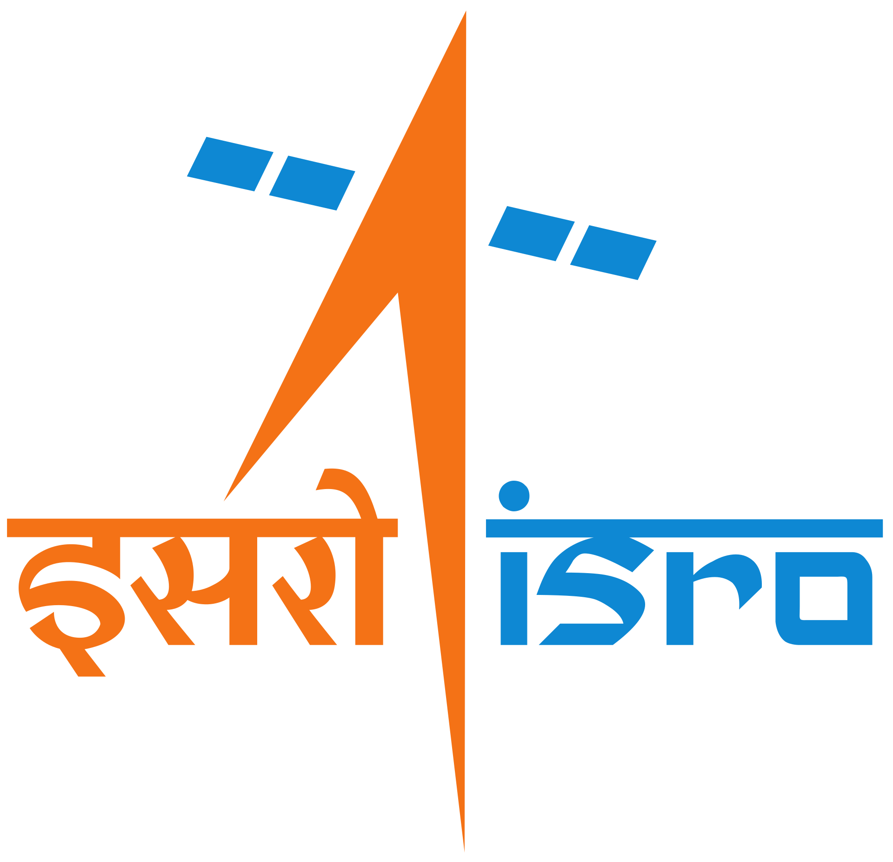
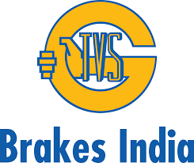
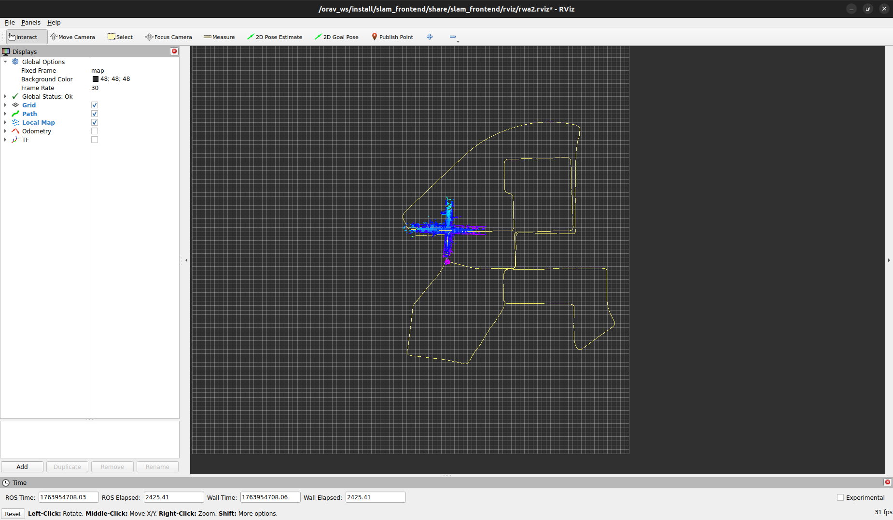
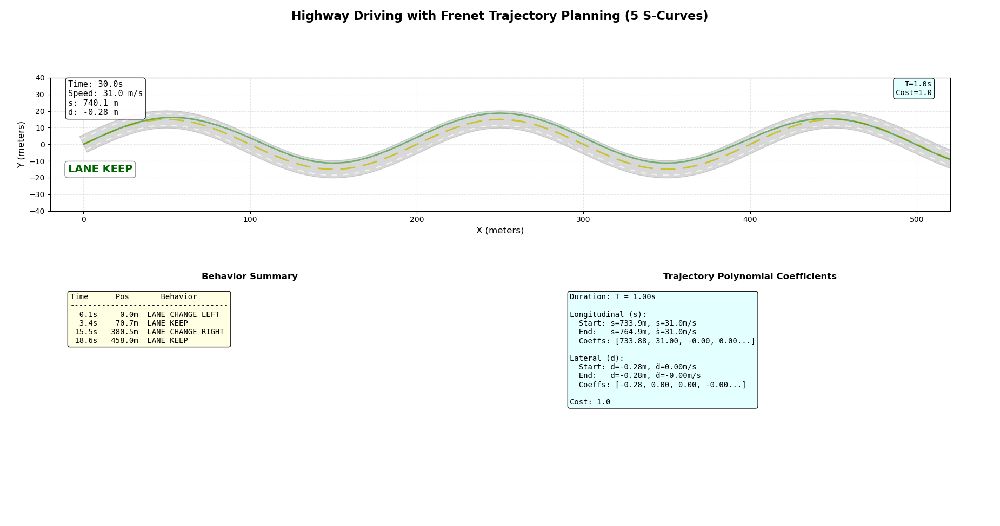
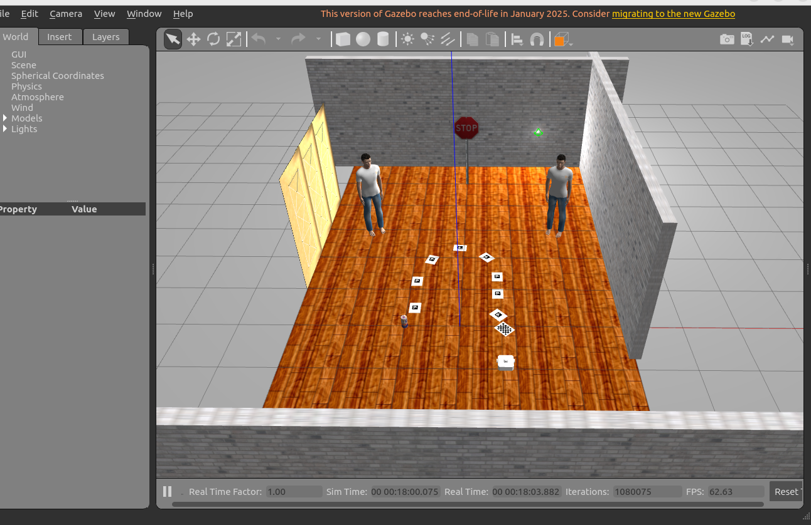
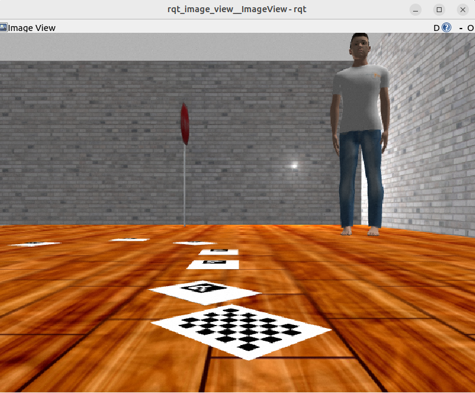

Affiliated with

Univ. of Maryland
Geometric Algorithms for Modeling, Motion and Animation Lab
Perception & Robotics Group

Indian Space Research Organisation

SKCET

Brakes India
MEng Robotics candidate at University of Maryland. Building autonomous systems that perceive, plan, and act — from LiDAR SLAM and AMR path planning to autonomous driving in CARLA, robotic manipulation, UAV autonomy, and quadruped navigation. Experienced with sim-to-real deployment on ModalAI Starling 2 drones using ROS2 and PX4.





